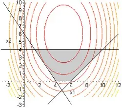

Методы оптимальных решений
В этом разделе вы найдете онлайн-учебник по методам оптимальных решений, где кратко изложена теория и детально разобраны примеры типовых задач.
Изучите постановку задачи линейного программирования, симплексный и графический методы, а также применение метода Гомори и программные решения в Excel. Следуйте шаг за шагом и повторяйте расчёты для собственных задач.
Ниже — мини-учебник по МОР и набор примеров с подробными решениями.
Мини-учебник по МОР
Глава 1. Задачи оптимизации
Глава 2. Производственная задача
Примеры с решением по МОР
- Примеры решений по линейному программированию
- Примеры по методам и моделям в экономике
- Контрольные по методам оптимальных решений
- Контрольные по линейному программированию
- Контрольные по экономико-математическим методам
- Контрольные по теории игр
- Контрольные по системному анализу
- Контрольные по теории принятия решений
- Тест по методам оптимальных решений